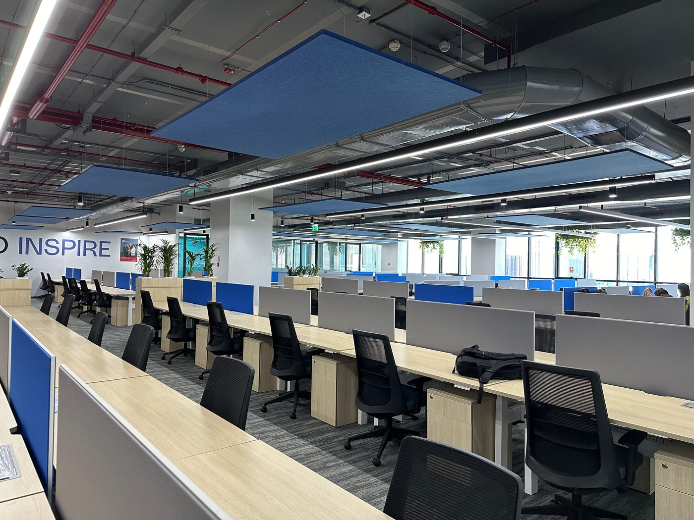

We build the interiors India works in.
Selected work
Who we build for
How we work
First survey to the end of the defects liability period.
01
Survey
Measured survey and a written understanding of the brief, before anything is priced.
02
Budget
Line-by-line BOQ against the drawings, with alternatives where they save money.
03
Mobilise
Approvals, permits, hoarding and induction — the week that decides the programme.
04
Execute
Our supervisors on site daily, trades sequenced in parallel, checked against spec.
05
Hand over
Snags closed before handover, then a defects liability period with a named contact.
Sectors
